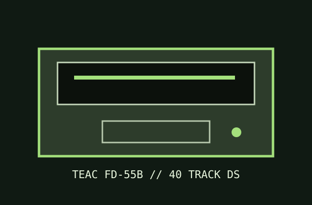

[ IDENTIFIED PC FLOPPY DRIVE ]
TEAC FD-55B 5.25-inch PC floppy drive
The FD-55B is TEAC's double-sided, 40-track 48-TPI double-density model. It is distinct from the single-sided FD-55A and later 80-track FD-55 members.

Documented specifications
| Density / capacity | Double-sided, 40 tracks/side at 48 TPI; FM/MFM DD. Typical PC formats are 320 KB (8 sectors/track) or 360 KB (9 sectors/track). |
|---|---|
| Interface | 34-pin Shugart/IBM-PC-compatible signal edge connector plus 4-pin +5 V/+12 V power. |
| Data rate / speed | 125 kbit/s FM or 250 kbit/s MFM; 300 rpm. |
| Jumpers / drive select | FD-55 option block offers DS0–DS3 and signal/LED options. Set one drive-select input for the PC cable twist; verify the ready/disk-change selection and termination using the TEAC diagrams. |
| Dimensions / power | 146 × 41 × 203 mm half-height; +5 V 0.38 A typical (0.6 A max), +12 V 0.25 A typical (0.9 A max), 4-pin power connector. |
| PC controller compatibility | Matches PC/XT-class 765-compatible controllers configured for 360 KB, 40-track 5.25-inch operation; 1.2 MB BIOS geometry is not applicable to this drive. |
Preservation notes
Keep this 48-TPI drive distinct from 96-TPI mechanisms in the collection. Confirm head count, DS setting, termination, and 300 rpm operation before reading; avoid writing to archival media until the format and alignment are known.
Manuals & archive sources
- TEAC FD-55 family specificationsManufacturer specifications include the FD-55B double-sided member.
- TEAC FD-55 maintenance manual (1985)Service procedures and jumper tables for FD-55 family mechanisms.